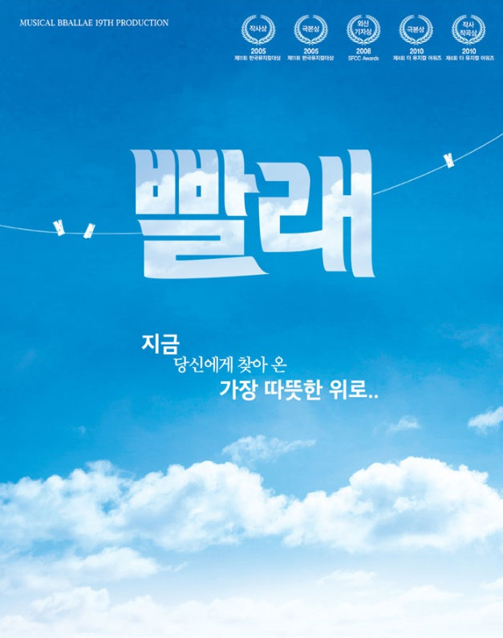

|  |
|
2003년 한국예술종합학교 졸업 공연으로 처음 세상에 선보여진 창작 뮤지컬 '빨래'. 2005년 국립극장에서 기획한 '이성 공감 2005'를 통해 대중을 만났고, 단 2주 만의 공연으로 제 11회 한국 뮤지컬대상에서 작사/극본상을 수상하는 쾌거를 이뤘다. 2005년 1차 프로덕션을 시작으로 2017년 20차 프로덕션을 맞이하며 12년이 넘는 시간 동안 사랑받고 있는 창작 뮤지컬 '빨래'.
서점에서 비정규직으로 일하는 나영과 몽골 이주노동자 솔롱고를 중심으로 서민들의 팍팍한 인생살이를 그려냈다. 주변에서 쉽게 만나볼 수 있는 평범한 사람들의 삶을 진솔하게 그리며 공감대를 형성, 희망과 위로의 메시지를 전한다. 짜임새 있는 스토리와 아름다운 음악, 비정규직 부당 해고, 이주 노동자 차별 등 사회 문제까지도 담아내며 작품성과 대중성을 겸비한 작품으로 평가 받고 있다.
고향인 강원도를 떠나 서울로 올라온 지 5년 된 강원도 아가씨 나영. 작가는 못 돼도 책은 좀 볼 것 같아 제일서점에서 직장생활을 시작했지만 기대와 다르게 책 진열만 하고 있을 뿐이다. 어느 날 빨래를 널러 올라간 옥상에서 우연히 이웃집 몽골 청년 솔롱고를 만나게 된다. 어색한 첫 인사 후 두 사람은 바람에 날려 넘어간 빨래로 인해 조금씩 가까워진다.
어느 날 나영은 동료 언니를 부당하게 해고하려는 서점 사장 빵의 횡포에 맞서나 자신도 쫓겨날 위기에 처한다. 상심에 빠져 술에 취한 나영은 집에 가는 길에 솔롱고를 만나게 되고 둘은 취객의 시비에 휘말리고 그 일을 계기로 서로의 아픔에 공감하게 되는데